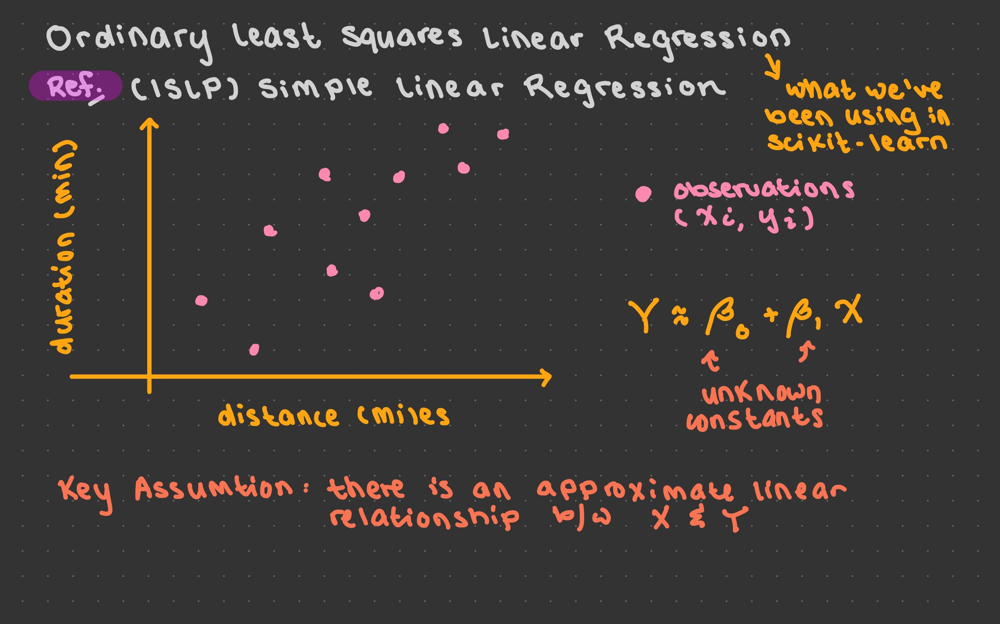
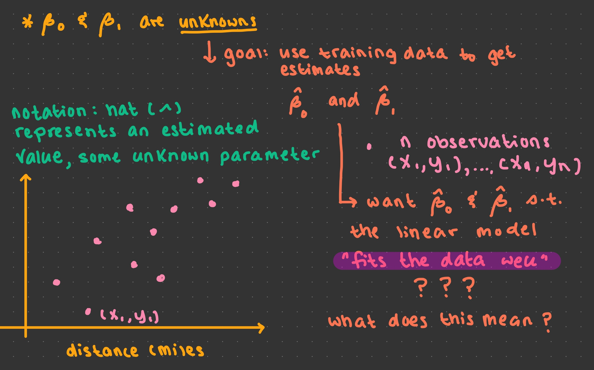
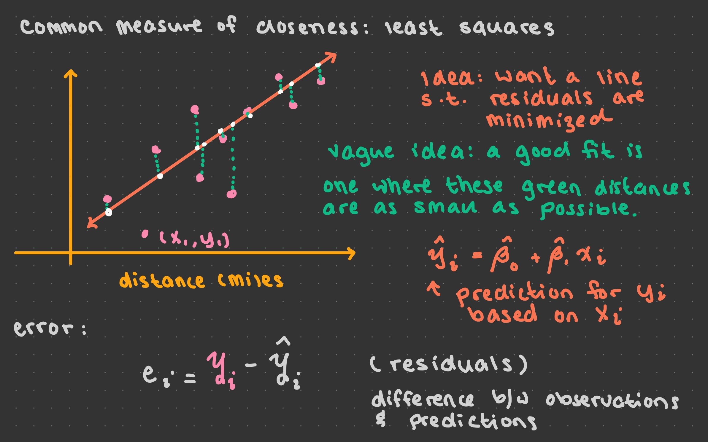
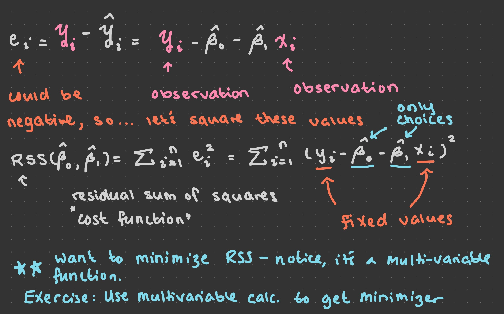
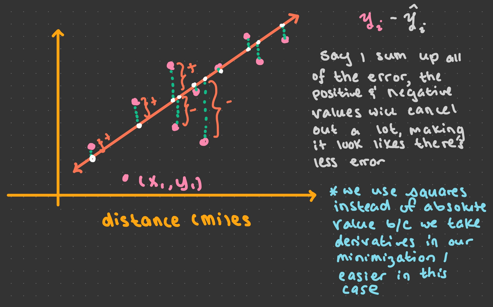
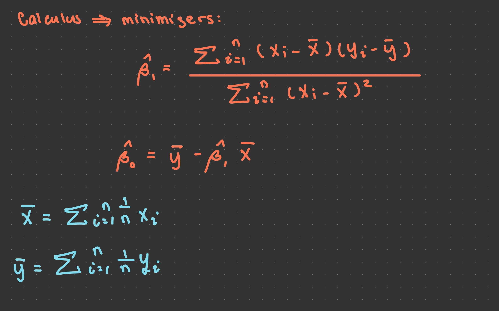

Lecture 10: August 28th, 2023#
Updates and Reminders:
Homework 5 and Homework 6 are posted and due Friday at midnight. Definitely attend discussion to get started and have questions answered.
Complete EDA outcomes by Wednesday at midnight.
Wednesday we’ll go over instructions for the final project (either in lecture or discussion, depending on where we end up in lecture today).
Monday, September 4th is a holiday. We will not be having lecture or discussion.
Last lecture there was a question about if we could increase the maximum number of rows allowed in a DataFrame for plotting with Altair. I wasn’t sure how to do it, but I have found out! Check out this link. The following code should also work for some larger datasets that we’ve seen in the class (e.g. the taxis dataset).
alt.data_transformers.enable('default',max_rows=10000)
Today:
Linear regression with multiple input features
Mathematical introduction to linear regression and computing coefficients by hand
Polynomial regression
import pandas as pd
import seaborn as sns
import altair as alt
from sklearn.linear_model import LinearRegression
from sklearn.datasets import make_regression
Last Time#
Interpreting Linear Regression Coefficients#
Recall that last time we were working with the taxis dataset. We considered the sub-DataFrame where the distance traveled was strictly greater than 0.
df_pre = sns.load_dataset("taxis").dropna(axis=0).sample(5000,random_state=10).copy()
df = df_pre[df_pre["distance"]>0].copy()
df.shape
(4972, 14)
df.head()
| pickup | dropoff | passengers | distance | fare | tip | tolls | total | color | payment | pickup_zone | dropoff_zone | pickup_borough | dropoff_borough | |
|---|---|---|---|---|---|---|---|---|---|---|---|---|---|---|
| 2871 | 2019-03-12 20:28:02 | 2019-03-12 20:43:16 | 1 | 2.80 | 12.0 | 3.15 | 0.00 | 18.95 | yellow | credit card | Upper East Side South | East Village | Manhattan | Manhattan |
| 898 | 2019-03-24 13:17:38 | 2019-03-24 13:31:41 | 1 | 1.20 | 10.0 | 2.65 | 0.00 | 15.95 | yellow | credit card | Murray Hill | Clinton East | Manhattan | Manhattan |
| 845 | 2019-03-04 13:22:23 | 2019-03-04 13:38:07 | 1 | 2.10 | 11.5 | 2.96 | 0.00 | 17.76 | yellow | credit card | Midtown East | Upper West Side South | Manhattan | Manhattan |
| 1580 | 2019-03-21 23:31:03 | 2019-03-21 23:42:56 | 1 | 3.35 | 12.0 | 3.16 | 0.00 | 18.96 | yellow | credit card | Kips Bay | Lincoln Square East | Manhattan | Manhattan |
| 4002 | 2019-03-16 08:55:35 | 2019-03-16 09:37:31 | 3 | 10.70 | 39.0 | 9.10 | 5.76 | 54.66 | yellow | credit card | Manhattan Valley | LaGuardia Airport | Manhattan | Queens |
Add a new column to the DataFrame, called “hour”, which contains the hour at which the pickup occurred.
Notice that the pickup and dropoff columns are already stored as datetime values, so we don’t need to do any conversion here.
df["hour"] = df["pickup"].dt.hour
df
| pickup | dropoff | passengers | distance | fare | tip | tolls | total | color | payment | pickup_zone | dropoff_zone | pickup_borough | dropoff_borough | hour | |
|---|---|---|---|---|---|---|---|---|---|---|---|---|---|---|---|
| 2871 | 2019-03-12 20:28:02 | 2019-03-12 20:43:16 | 1 | 2.80 | 12.0 | 3.15 | 0.00 | 18.95 | yellow | credit card | Upper East Side South | East Village | Manhattan | Manhattan | 20 |
| 898 | 2019-03-24 13:17:38 | 2019-03-24 13:31:41 | 1 | 1.20 | 10.0 | 2.65 | 0.00 | 15.95 | yellow | credit card | Murray Hill | Clinton East | Manhattan | Manhattan | 13 |
| 845 | 2019-03-04 13:22:23 | 2019-03-04 13:38:07 | 1 | 2.10 | 11.5 | 2.96 | 0.00 | 17.76 | yellow | credit card | Midtown East | Upper West Side South | Manhattan | Manhattan | 13 |
| 1580 | 2019-03-21 23:31:03 | 2019-03-21 23:42:56 | 1 | 3.35 | 12.0 | 3.16 | 0.00 | 18.96 | yellow | credit card | Kips Bay | Lincoln Square East | Manhattan | Manhattan | 23 |
| 4002 | 2019-03-16 08:55:35 | 2019-03-16 09:37:31 | 3 | 10.70 | 39.0 | 9.10 | 5.76 | 54.66 | yellow | credit card | Manhattan Valley | LaGuardia Airport | Manhattan | Queens | 8 |
| ... | ... | ... | ... | ... | ... | ... | ... | ... | ... | ... | ... | ... | ... | ... | ... |
| 1812 | 2019-03-22 15:07:37 | 2019-03-22 15:15:51 | 1 | 1.20 | 7.5 | 0.00 | 0.00 | 10.80 | yellow | cash | Clinton East | Midtown North | Manhattan | Manhattan | 15 |
| 2191 | 2019-03-25 16:04:47 | 2019-03-25 16:48:51 | 1 | 13.11 | 52.0 | 13.11 | 5.76 | 78.67 | yellow | credit card | South Jamaica | Flushing Meadows-Corona Park | Queens | Queens | 16 |
| 4827 | 2019-03-13 21:49:00 | 2019-03-13 22:02:04 | 1 | 2.68 | 11.0 | 1.00 | 0.00 | 15.80 | yellow | credit card | East Chelsea | Alphabet City | Manhattan | Manhattan | 21 |
| 4326 | 2019-03-28 08:22:07 | 2019-03-28 08:33:50 | 1 | 1.60 | 9.0 | 2.00 | 0.00 | 14.30 | yellow | credit card | Battery Park City | TriBeCa/Civic Center | Manhattan | Manhattan | 8 |
| 5779 | 2019-03-31 20:09:49 | 2019-03-31 20:17:33 | 1 | 1.47 | 7.5 | 2.20 | 0.00 | 11.00 | green | credit card | Forest Hills | Glendale | Queens | Queens | 20 |
4972 rows × 15 columns
Remove all rows from the DataFrame where the hour is 16 or earlier. (So we are only using late afternoon and evening taxi rides.)
Think about how traffic changes throughout the day. There’s typically a morning rush hour and an evening rush hour, with low traffic between these hours.
df = df[df["hour"]>16]
df.head()
| pickup | dropoff | passengers | distance | fare | tip | tolls | total | color | payment | pickup_zone | dropoff_zone | pickup_borough | dropoff_borough | hour | |
|---|---|---|---|---|---|---|---|---|---|---|---|---|---|---|---|
| 2871 | 2019-03-12 20:28:02 | 2019-03-12 20:43:16 | 1 | 2.80 | 12.0 | 3.15 | 0.0 | 18.95 | yellow | credit card | Upper East Side South | East Village | Manhattan | Manhattan | 20 |
| 1580 | 2019-03-21 23:31:03 | 2019-03-21 23:42:56 | 1 | 3.35 | 12.0 | 3.16 | 0.0 | 18.96 | yellow | credit card | Kips Bay | Lincoln Square East | Manhattan | Manhattan | 23 |
| 6369 | 2019-03-26 18:15:56 | 2019-03-26 18:41:22 | 6 | 6.81 | 23.0 | 2.00 | 0.0 | 26.80 | green | credit card | Astoria | Middle Village | Queens | Queens | 18 |
| 5930 | 2019-03-04 21:16:10 | 2019-03-04 21:29:01 | 1 | 2.85 | 12.0 | 3.32 | 0.0 | 16.62 | green | credit card | Elmhurst/Maspeth | Forest Hills | Queens | Queens | 21 |
| 2783 | 2019-03-25 23:26:21 | 2019-03-25 23:35:57 | 3 | 2.50 | 10.5 | 2.85 | 0.0 | 17.15 | yellow | credit card | Upper East Side North | Bloomingdale | Manhattan | Manhattan | 23 |
Add a new column to the DataFrame, called “duration”, which contains the amount of time in minutes of the taxi ride.
Hint 1. Because the “dropoff” and “pickup” columns are already date-time values, we can subtract one from the other and pandas will know what to do.
Hint 2. I expected there to be a minutes attribute (after using the dt accessor) but there wasn’t. Call dir to see some options.
df.columns
Index(['pickup', 'dropoff', 'passengers', 'distance', 'fare', 'tip', 'tolls',
'total', 'color', 'payment', 'pickup_zone', 'dropoff_zone',
'pickup_borough', 'dropoff_borough', 'hour'],
dtype='object')
df["duration"] = df["dropoff"] - df["pickup"]
/var/folders/ct/dspwzk2n6kb19j3s9g3ldtc80000gn/T/ipykernel_22426/2650549470.py:1: SettingWithCopyWarning:
A value is trying to be set on a copy of a slice from a DataFrame.
Try using .loc[row_indexer,col_indexer] = value instead
See the caveats in the documentation: https://pandas.pydata.org/pandas-docs/stable/user_guide/indexing.html#returning-a-view-versus-a-copy
df["duration"] = df["dropoff"] - df["pickup"]
df.head()
| pickup | dropoff | passengers | distance | fare | tip | tolls | total | color | payment | pickup_zone | dropoff_zone | pickup_borough | dropoff_borough | hour | duration | |
|---|---|---|---|---|---|---|---|---|---|---|---|---|---|---|---|---|
| 2871 | 2019-03-12 20:28:02 | 2019-03-12 20:43:16 | 1 | 2.80 | 12.0 | 3.15 | 0.0 | 18.95 | yellow | credit card | Upper East Side South | East Village | Manhattan | Manhattan | 20 | 0 days 00:15:14 |
| 1580 | 2019-03-21 23:31:03 | 2019-03-21 23:42:56 | 1 | 3.35 | 12.0 | 3.16 | 0.0 | 18.96 | yellow | credit card | Kips Bay | Lincoln Square East | Manhattan | Manhattan | 23 | 0 days 00:11:53 |
| 6369 | 2019-03-26 18:15:56 | 2019-03-26 18:41:22 | 6 | 6.81 | 23.0 | 2.00 | 0.0 | 26.80 | green | credit card | Astoria | Middle Village | Queens | Queens | 18 | 0 days 00:25:26 |
| 5930 | 2019-03-04 21:16:10 | 2019-03-04 21:29:01 | 1 | 2.85 | 12.0 | 3.32 | 0.0 | 16.62 | green | credit card | Elmhurst/Maspeth | Forest Hills | Queens | Queens | 21 | 0 days 00:12:51 |
| 2783 | 2019-03-25 23:26:21 | 2019-03-25 23:35:57 | 3 | 2.50 | 10.5 | 2.85 | 0.0 | 17.15 | yellow | credit card | Upper East Side North | Bloomingdale | Manhattan | Manhattan | 23 | 0 days 00:09:36 |
dir(df["duration"].dt)
['__annotations__',
'__class__',
'__delattr__',
'__dict__',
'__dir__',
'__doc__',
'__eq__',
'__format__',
'__frozen',
'__ge__',
'__getattribute__',
'__gt__',
'__hash__',
'__init__',
'__init_subclass__',
'__le__',
'__lt__',
'__module__',
'__ne__',
'__new__',
'__reduce__',
'__reduce_ex__',
'__repr__',
'__setattr__',
'__sizeof__',
'__str__',
'__subclasshook__',
'__weakref__',
'_accessors',
'_add_delegate_accessors',
'_constructor',
'_delegate_method',
'_delegate_property_get',
'_delegate_property_set',
'_dir_additions',
'_dir_deletions',
'_freeze',
'_get_values',
'_hidden_attrs',
'_parent',
'_reset_cache',
'ceil',
'components',
'days',
'floor',
'freq',
'microseconds',
'nanoseconds',
'round',
'seconds',
'to_pytimedelta',
'total_seconds']
One thing to notice is that there are relatively few options available here (especially to when we call dir for things in NumPy). Since there’s no minutes attribute, how about we use seconds and convert to minutes ourselves.
df["duration"] = df["duration"].dt.seconds
/var/folders/ct/dspwzk2n6kb19j3s9g3ldtc80000gn/T/ipykernel_22426/365044000.py:1: SettingWithCopyWarning:
A value is trying to be set on a copy of a slice from a DataFrame.
Try using .loc[row_indexer,col_indexer] = value instead
See the caveats in the documentation: https://pandas.pydata.org/pandas-docs/stable/user_guide/indexing.html#returning-a-view-versus-a-copy
df["duration"] = df["duration"].dt.seconds
This is what all of the warnings have been about. I already converted “duration” to seconds, which is now represented as an integer. If I run the above cell again, I get an error because now “duration” not longer is datetime values.
# Divide by 60 to get the number of minutes
df["duration"] = df["duration"]/60
/var/folders/ct/dspwzk2n6kb19j3s9g3ldtc80000gn/T/ipykernel_22426/3948586737.py:2: SettingWithCopyWarning:
A value is trying to be set on a copy of a slice from a DataFrame.
Try using .loc[row_indexer,col_indexer] = value instead
See the caveats in the documentation: https://pandas.pydata.org/pandas-docs/stable/user_guide/indexing.html#returning-a-view-versus-a-copy
df["duration"] = df["duration"]/60
df.head()
| pickup | dropoff | passengers | distance | fare | tip | tolls | total | color | payment | pickup_zone | dropoff_zone | pickup_borough | dropoff_borough | hour | duration | |
|---|---|---|---|---|---|---|---|---|---|---|---|---|---|---|---|---|
| 2871 | 2019-03-12 20:28:02 | 2019-03-12 20:43:16 | 1 | 2.80 | 12.0 | 3.15 | 0.0 | 18.95 | yellow | credit card | Upper East Side South | East Village | Manhattan | Manhattan | 20 | 15.233333 |
| 1580 | 2019-03-21 23:31:03 | 2019-03-21 23:42:56 | 1 | 3.35 | 12.0 | 3.16 | 0.0 | 18.96 | yellow | credit card | Kips Bay | Lincoln Square East | Manhattan | Manhattan | 23 | 11.883333 |
| 6369 | 2019-03-26 18:15:56 | 2019-03-26 18:41:22 | 6 | 6.81 | 23.0 | 2.00 | 0.0 | 26.80 | green | credit card | Astoria | Middle Village | Queens | Queens | 18 | 25.433333 |
| 5930 | 2019-03-04 21:16:10 | 2019-03-04 21:29:01 | 1 | 2.85 | 12.0 | 3.32 | 0.0 | 16.62 | green | credit card | Elmhurst/Maspeth | Forest Hills | Queens | Queens | 21 | 12.850000 |
| 2783 | 2019-03-25 23:26:21 | 2019-03-25 23:35:57 | 3 | 2.50 | 10.5 | 2.85 | 0.0 | 17.15 | yellow | credit card | Upper East Side North | Bloomingdale | Manhattan | Manhattan | 23 | 9.600000 |
Fit a new
LinearRegressionobject, this time using “distance”, “hour”, “passengers” as the input features, and using “duration” as the target value.
Remember our workflow for scikit-learn 1.) Import (already done) 2.) Instantiate…
reg = LinearRegression()
3.) Fit
reg.fit(df[["distance","hour","passengers"]],df["duration"])
LinearRegression()In a Jupyter environment, please rerun this cell to show the HTML representation or trust the notebook.
On GitHub, the HTML representation is unable to render, please try loading this page with nbviewer.org.
LinearRegression()
Sanity Check: We’re asking how does distance, the hour of the day, and the number of passengers influence how many minutes a taxi ride will take. Predictions:
Distance: We expect that the greater the distance, the longer the taxi ride will take.
Hour: Remember, we’re looking at 5:00pm and after. As we move away from rush hour (5:00pm), we expect the taxi ride to take less time.
Passengers: Do we expect the number of passengers to have an influence on the duration of the ride? We don’t expect this to have too much influence on the duration of the taxi ride, but we’ll find out.
Now, let’s get the coefficients…
#["distance","hour","passengers"]
reg.coef_
array([ 2.394538 , -0.59737863, -0.08703218])
Very important topic: being able to interpret what these coefficients are saying. Pay particular attention to the signs.
The coefficient for distance is positive; this makes sense, because as the number of miles we travel increases, we expect the duration of the ride to take longer.
The coefficient for the hour is negative; this is saying that as the hour increases (remember we are looking after 5:00pm), the duration of the taxi ride is shorter. The reason we restricted to after 5:00pm, is because we don’t expect the duration to decrease consistently throughout the day. There is traffic in the morning, when we also expect the duration of the taxi ride to be longer. If we included all hours of the day, we could expect this coefficient to be less accurate.
The last coefficient deals with the number of passengers. While it is negative, it is very close to 0; this tells us that the number of passengers doesn’t really say much about the duration of the taxi ride. Notice: the number of passengers in the care is pretty small, so this coefficient multiplied with the number of passengers is still a pretty small number. We’ll see examples later today where coefficients might be small, but the column they correspond to has huge numbers, we expect more of an influence of the coefficients in this case.
Reminder of the model:
You can kind of think of the coefficients like partial derivatives. For example, as we increase the distance by 1 mile, we can expect the time to go up by 2.4 minutes.
Recap and Examples So Far#
The coefficients in each of the following should all make intuitive sense, except for the number of passengers in the taxis dataset. Recall that we don’t expect the number of passengers to make a difference to the duration of the taxi ride.
Spotify Data#
Here, “Acousticness” is opposite “Electronic”, and “Valence” is a measure of happiness/positivity.
Input features (predictors):
["Acousticness", "Speechiness", "Valence"]Target: “Energy”
Coefficients:
[-0.33557117, -0.08205736, 0.21893852]
“The story the coefficients are telling us”
The more acousticness a song has, the less energy it has
I’d say “Speechiness” is similar to the “passengers” situation; it’s pretty close to zero
The more valence a song has, the more energy it has
spotdata = pd.read_csv("spotify.csv",na_values=" ").dropna()
reg2 = LinearRegression()
reg2.fit(spotdata[["Acousticness", "Speechiness", "Valence"]],spotdata["Energy"])
reg2.coef_
array([-0.33557117, -0.08205736, 0.21893852])
The mpg dataset#
mpg = sns.load_dataset("mpg").dropna()
Input features: ["horsepower", "weight", "model_year", "cylinders"]
Target: mpg
Coefficients: [-0.00361502, -0.00627463, 0.74663191, -0.1276871 ]
Notice that as “model_year” increases, so does “mpg”. This makes sense because newer cars tend to have better fuel economy.
Warning: We haven’t scaled any data yet. What this means is that the orders of magnitude of each input feature could be wildly different. For instance, “cylinders” is a number between 1 and 8 in this dataset, while “weight” is in the thousands of pounds. This will influence the magnitude of the coefficients, and it’s hard at this point to say which, if any, coefficient “is the most important”. For now, the more important thing is looking at the signs.
reg3 = LinearRegression()
reg3.fit(mpg[["horsepower", "weight", "model_year", "cylinders"]],mpg["mpg"])
reg3.coef_
array([-0.00361502, -0.00627463, 0.74663191, -0.1276871 ])
How does the linear regression model work?#
First, we’ll have a short iPad section on some of the math behind the linear regression that scikit-learn uses. We won’t go through all of the details, but it will be enought to try testing some examples by hand.






Here, we generate sample data.
X, y = make_regression(n_samples=10, n_features=1, bias=13, noise=25, random_state=115)
data = {"input":X.reshape(-1),"target":y}
Computing the coefficients by hand#
Compute the coefficients of an ordinary least squares linear regression for our sample data. Then verify your answers by fitting a
LinearRegressionobject.
xvalues = X.reshape(-1)
xvalues
array([-1.8084713 , 0.62178653, -0.82618176, 1.60925431, 1.9240453 ,
0.60836198, -0.93190121, 1.231978 , 0.21530948, 1.43236953])
y
array([-87.46955972, 27.84651384, -39.92172546, 98.37056305,
164.22459134, 62.81480042, -42.08652976, 76.75523358,
32.3430665 , 96.18407347])
sumx = xvalues.mean()
sumy = y.mean()
b1 = ((xvalues - sumx)*(y - sumy)).sum()/((xvalues - sumx)**2).sum()
b1
60.82851283962949
b0 = sumy - b1*sumx
b0
14.109050087251138
reg = LinearRegression()
reg.fit(X,y)
LinearRegression()In a Jupyter environment, please rerun this cell to show the HTML representation or trust the notebook.
On GitHub, the HTML representation is unable to render, please try loading this page with nbviewer.org.
LinearRegression()
reg.coef_
array([60.82851284])
reg.intercept_
14.109050087251141
Plot the sample data and the line determined by performing linear regression.
df = pd.DataFrame(data)
df["pred"] = reg.predict(X)
c1 = alt.Chart(df).mark_circle(size=100).encode(
x="input",
y="target"
)
c2 = alt.Chart(df).mark_line(color="red").encode(
x="input",
y="pred"
)
c1+c2
That’s all we got to today. We’ll pick up next time with polynomial regression.
![Created in deepnote.com]() Created in Deepnote
Created in Deepnote